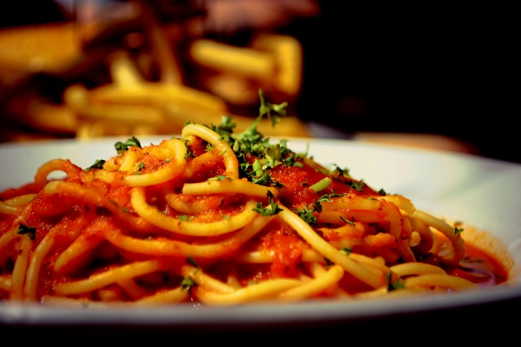

Pasta

Pasta is a versatile and beloved staple of Italian cuisine, known for its simple ingredients and endless variety of shapes and sizes. Made primarily from durum wheat flour and water, pasta can also include eggs for added richness. It is typically boiled in salted water until tender, then paired with a wide range of sauces, from light and simple to rich and hearty. Whether served as a main course or a side dish, pasta provides a comforting and satisfying meal that can be tailored to suit any taste or occasion. From long strands of spaghetti to short tubes of penne, pasta's adaptability and universal appeal make it a cherished ingredient in kitchens around the world.
Making a delicious pasta dish begins with selecting your pasta type and cooking it to perfection. Start by bringing a large pot of salted water to a rolling boil. Add the pasta—whether it’s spaghetti, penne, fettuccine, or any other shape—and cook according to the package instructions until it’s al dente, meaning it’s tender but still has a bit of bite. While the pasta cooks, prepare your sauce. For a classic marinara, sauté minced garlic and chopped onions in olive oil until fragrant, then add crushed tomatoes, a pinch of sugar, salt, pepper, and a handful of fresh basil. Let it simmer so the flavors meld together.
Once the pasta is cooked, drain it, reserving a cup of the pasta water. Toss the pasta directly into the sauce, adding a splash of the reserved pasta water to help the sauce adhere to the noodles. Finish the dish with a generous sprinkle of grated Parmesan cheese and fresh herbs like parsley or basil. Serve immediately, enjoying the perfect harmony of flavors and textures that make pasta such a beloved dish around the world. Whether it’s a simple garlic and olive oil spaghetti or a rich and creamy Alfredo, pasta dishes are endlessly customizable to suit any palate.
Ingredients:
-
Pasta
- 1 pound (450 grams) ground beef or sausage
- Salt (for boiling water)
-
Marinara Sauce
- 2 tablespoons olive oil
- 1 onion, finely chopped
- 3 cloves garlic, minced
- 1 can (28 ounces/800 grams) crushed tomatoes
- 1 teaspoon sugar
- Salt and pepper to taste
- 1/4 teaspoon red pepper flakes (optional, for a bit of heat)
- 1/4 cup fresh basil leaves, chopped (or 1 teaspoon dried basil)
-
Finishing Touches
- 1/2 cup grated Parmesan cheese
- Fresh parsley or basil for garnish
-
Optional Additions
- 1/2 teaspoon dried oregano
- 1/4 cup red wine (for a deeper flavor in the sauce)
- 1/4 cup heavy cream (for a creamy variation)
- 1/2 cup sliced mushrooms, bell peppers, or other vegetables
- 1/2 pound (225 grams) cooked ground beef, sausage, or chicken
Let's make it now!
-
Step 1: Cook the Pasta
- Boil Water: Fill a large pot with water and add a generous amount of salt (about 1-2 tablespoons). Bring it to a rolling boil.
- Cook Pasta: Add 1 pound (450 grams) of pasta to the boiling water. Stir occasionally to prevent sticking. Cook according to the package instructions until al dente (tender but with a bit of bite).
- Reserve Pasta Water: Before draining the pasta, reserve 1 cup of the pasta cooking water.
- Drain Pasta: Drain the pasta in a colander and set aside.
-
Step 2: Prepare the Marinara Sauce
- Heat Olive Oil: In a large skillet or saucepan, heat 2 tablespoons of olive oil over medium heat.
- Sauté Aromatics: Add 1 finely chopped onion to the skillet and cook until it’s soft and translucent, about 5 minutes. Add 3 minced garlic cloves and cook for another 1-2 minutes, until fragrant.
- Add Tomatoes: Pour in 1 can (28 ounces/800 grams) of crushed tomatoes. Stir to combine.
- Season Sauce: Add 1 teaspoon of sugar, salt and pepper to taste, and 1/4 teaspoon of red pepper flakes if using. If desired, add 1/2 teaspoon of dried oregano and/or 1/4 cup of red wine for additional flavor.
- Simmer Sauce: Reduce the heat to low and let the sauce simmer for 20-30 minutes, stirring occasionally, to allow the flavors to meld. If the sauce becomes too thick, you can add a bit of the reserved pasta water to reach your desired consistency.
- Add Basil: Stir in 1/4 cup of chopped fresh basil (or 1 teaspoon of dried basil) just before serving.
-
Step 3: Combine Pasta and Sauce
- Mix Pasta and Sauce: Bring a large pot of salted water to a boil. Add 12 lasagna noodles and cook according to package instructions until al dente. Drain and lay them flat on a baking sheet to prevent sticking.
- Finish with Cheese: Sprinkle 1/2 cup of grated Parmesan cheese over the pasta and toss to combine.
-
Step 4: Serve
- Garnish: Serve the pasta in individual bowls or on plates. Garnish with fresh parsley or basil for a burst of color and freshness.
- Enjoy: Enjoy your delicious homemade pasta with marinara sauce!
-
Step 5: Optional Additions
- Creamy Variation: For a creamy sauce, stir in 1/4 cup of heavy cream to the marinara sauce before adding the pasta.
- Vegetables: Add sliced mushrooms, bell peppers, or other vegetables to the sauce after sautéing the onions and garlic.
- Protein: Add cooked ground beef, sausage, or chicken to the sauce for a heartier dish.